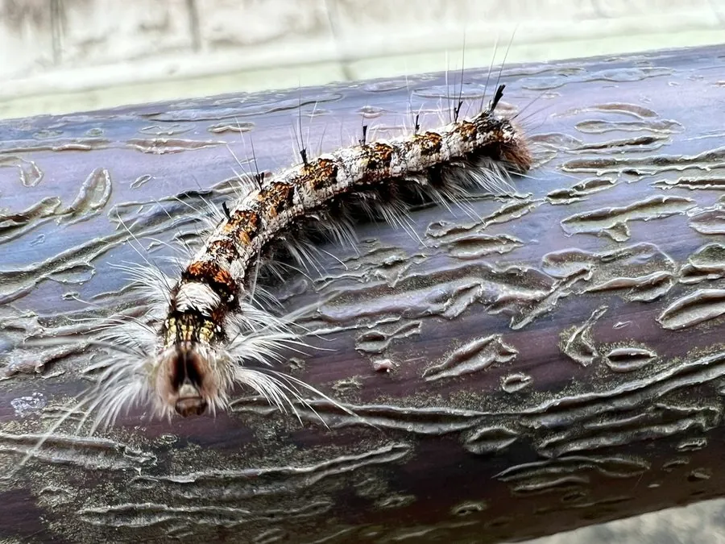

昆虫 · 动物界
马尾松毛虫 Dendrolimus punctatus

中国南方松林的重要害虫，幼虫体表长满毒毛，大发生时能把整片松林的针叶吃光，接触毒毛会引起皮肤瘙痒红肿。
- 分类
- 门节肢动物门纲昆虫纲目鳞翅目科枯叶蛾科属松毛虫属
- 栖息环境
- 中国南方的马尾松林、湿地松林等松林
- 地理分布
- 中国南方松林区，如广东、广西、福建、湖南、江西等地
- 保护级别
- IUCN 暂无评估；中国未列入国家重点保护名录
物种志
马尾松毛虫成虫翅展 3.5–5.5 厘米，雌蛾明显大于雄蛾，体色呈灰褐、黄褐或棕褐色，前翅中央有一条浅色横带和若干斑纹，后翅颜色较深，身体覆盖绒毛，停息时像一片枯叶。幼虫体表密布长毛和毒毛，体色呈棕褐或灰黑色，受到惊扰时会昂头竖起毒毛。
它分布于中国南方马尾松林区，幼虫取食马尾松、湿地松等松树的针叶，大发生时可将整片松林的针叶吃光，导致松树生长衰弱甚至死亡，是历史上有名的森林害虫。它一年发生 2–4 代，雌蛾可产卵 300–500 枚，卵多产于松针上，幼虫孵化后群集取食。它的毒毛接触人体皮肤会引起瘙痒、红肿，严重时出现过敏反应；防治上可利用白僵菌、赤眼蜂等天敌进行生物防治，减少化学农药使用。
形态与习性
- 食性幼虫取食马尾松等松树针叶
- 翅展3.5–5.5 cm，雌蛾较大
- 寿命成虫约 5–10 天，一年 2–4 代
- 繁殖卵生，雌蛾产卵 300–500 枚于松针上
- 活动节律蛾类夜间活动，幼虫昼夜取食
- 毒性幼虫毒毛接触皮肤会引起瘙痒红肿，需避免直接接触
趣味知识
- 马尾松毛虫幼虫体表长满毒毛，接触皮肤会引起剧烈瘙痒和红肿。
- 大发生时幼虫能把整片松林的针叶吃光，是著名的森林害虫。
- 白僵菌和赤眼蜂是马尾松毛虫的重要天敌，可用于生物防治。